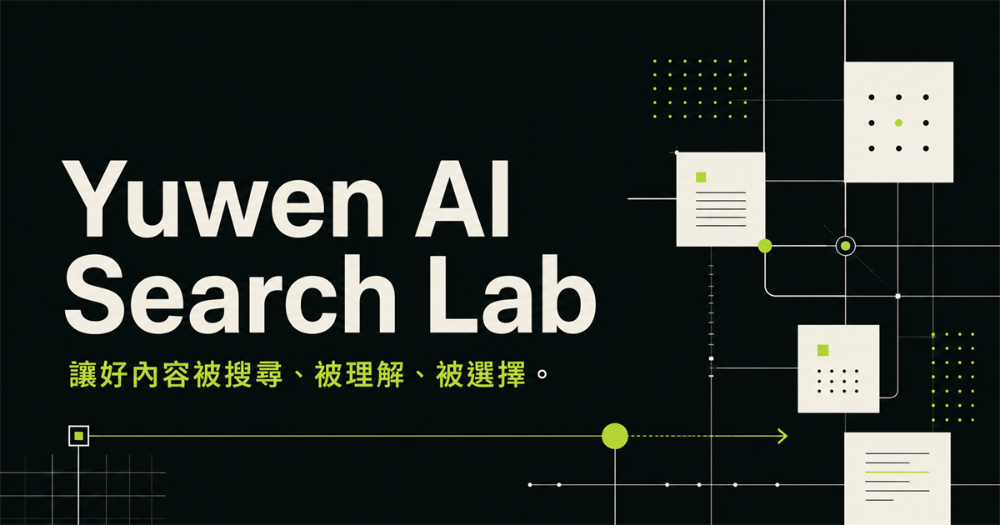

讀懂需求
梳理搜尋意圖、受眾語言與決策情境，找出真正值得回答的問題。
RACHEL TSENG · OPEN TO OPPORTUNITIES
我是曾語文（Rachel Tseng）。從國際貿易、客戶開發與英文商務溝通出發， 現在把對需求的理解與 AI 工作流程帶進 SEO，讓內容不只被看見，也能建立信任。
SEARCH SIGNAL / 01
Context before content.
MY STORY
從回覆海外客戶詢問、處理訂單、聯繫工廠，到以英文商務書信維繫售後關係， 我的工作一直圍繞著同一件事：先聽懂需求，再把複雜資訊說清楚。 Yuwen AI Search Lab 延續這份能力，用 AI 放大研究與執行效率，用 SEO 校準受眾真正想解決的問題。
英語專業輔仁大學英國語文學系
跨文化學習加拿大語言進修一年
實務背景國際貿易與客戶開發
市場經驗海外參展與商務溝通
CAREER FOCUS
我希望把多年國際業務累積的客戶需求理解、產品資訊整理與英文溝通能力，帶進 AI 時代的內容工作，協助品牌用更清楚、更可信的方式被搜尋與理解。

EXPERIENCE TO DIRECTION
英語本科與加拿大語言進修，讓我學會在不同文化與情境之間，尋找清楚、合適的表達方式。
在電子產品、線材與包材相關國際業務工作中，累積客戶開發、訂單處理、產品推廣與售後關係維護經驗。
以客戶需求為起點，結合搜尋意圖、品牌敘事與 AI 輔助流程，建立能被理解、查證與持續優化的內容。
CONTEXT-FIRST METHOD
不從「今天要發什麼」開始，而從受眾為何搜尋、品牌能提供什麼獨特理解開始。
梳理搜尋意圖、受眾語言與決策情境，找出真正值得回答的問題。
把品牌觀點、主題關係與內容路徑組成清楚、可延伸的資訊架構。
以 AI 加速研究、草擬與版本探索，但保留查證、取捨與語氣的人工判斷。
根據搜尋表現與真實回饋更新內容，使每一次發布都成為下一次決策的資料。
TRANSFERABLE STRENGTHS
以下方向結合已驗證的國際業務背景與正在建立的 AI SEO 實作。
01
延續客戶開發經驗，從搜尋情境與受眾語言找出真正值得回答的問題。
02
運用英語專業與商務書信經驗，把產品資訊整理成清楚、具脈絡的中英文內容。
03
以研究、架構、撰寫、查證與回顧的流程，建立可持續學習與迭代的內容系統。
NON-NEGOTIABLES
脈絡先於提示詞先理解品牌與受眾，再決定如何生成。
證據先於聲量不捏造案例、數據或權威，讓每個主張都站得住腳。
人先於演算法排名是入口；真正的目標是幫助人理解、比較與行動。
QUICK ANSWERS
AI SEO 應該先理解搜尋意圖與品牌語境，再用 AI 提升研究和製作效率；產量不是目的，能被找到並建立信任才是。
適合正在建立主題權威、整理品牌訊息，或希望把零散內容流程變成可重複系統的個人與團隊。
先從你的受眾、目標與現有內容出發，找出最值得優先處理的一個搜尋問題，再決定合適的內容範圍。
NEXT SIGNAL
歡迎從 GitHub 認識我的實作與學習成果。網站只呈現與專業品牌相關的公開內容，並會隨著真實作品持續更新。
從 GitHub 與我聯繫